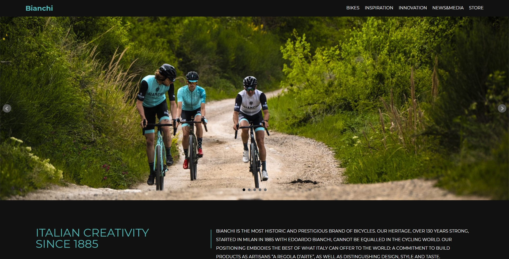

Bianchi - Resposive Web
 View site* 포트폴리오를 위한 개인 작업물로 해당 기업과는 관련 없음을 밝힙니다. *
About Bianchi Project
자전거 브랜드 Bianchi의 메인 페이지를 반응형 웹으로 리뉴얼하였습니다. 미디어 쿼리를 처음 적용해본 프로젝트로 반응형 웹에 대한 개념을 쌓을 수 있었던 계기가 되었습니다.
What I did
디자인, 퍼블리싱
Technologies
HTML, CSS
Type of project
Website
Timeframe
2020. 09. 09 ~ 2020. 09. 16